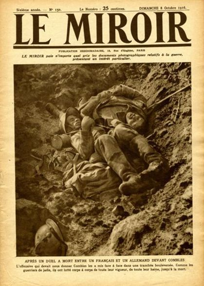
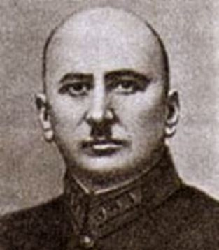
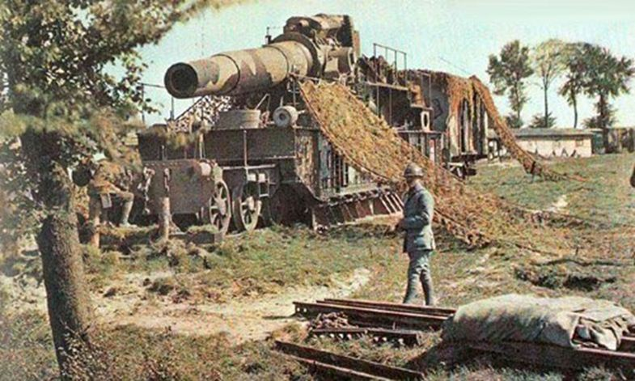
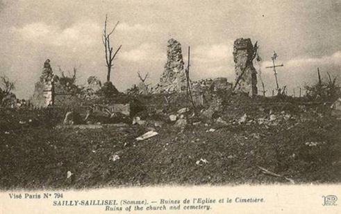
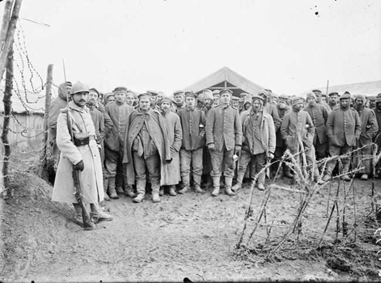
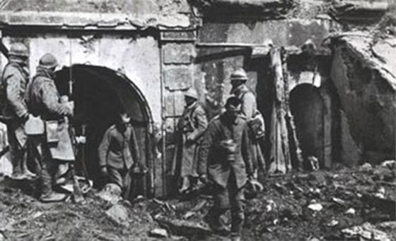
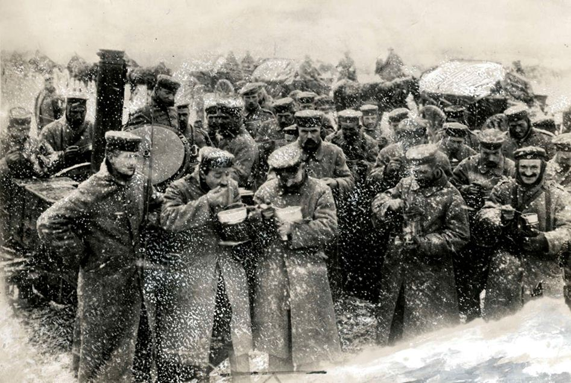

Déjà 792 jours de guerre… Les batailles de Verdun et de la Somme se font plus meurtrières que jamais.
Du lundi 2 octobre au dimanche 8 octobre 1916
Sur les fronts belge et français
Dans la région de Dixmude et sur l’Yser, au sud de cette ville, se sont déroulés des duels d'artillerie; la lutte entre les batteries de campagne et de tranchées a été vive vers Steenstraete et Boesinghe. Dans le secteur de Thiepval, l'ennemi a été rejeté du terrain qu'il occupait vers la redoute Stieff; de même il a reculé a la redoute Schwaben. Seize coups de main heureux ont été exécutés par nos alliés d'Ypres à Neuve-Chapelle.
Sur le front de la Somme, une attaque localisée de chaque côté de la route Péronne-Bapaume, permets aux Français de prendre possession d'une importante tranchée au nord de Rancourt. Ils font 120 prisonniers dont 3 officiers.
Le lendemain, au nord de la Somme, les troupes françaises complètent la conquête de puissantes lignes de tranchées allemandes situées entre Morval et le bois de Saint-Pierre-Vaast ; ils font alors environ 200 prisonniers dont 10 officiers.
Le mauvais temps empêche les Alliés de reprendre leur action offensive sur une grande échelle en Picardie ; cependant leur artillerie crache sans arrêt du fer et du feu sur les organisations allemandes.
L'ennemi opère d'importants mouvements de troupes et de matériel dans la plaine de la Woëvre, qui relie Saint-Mihiel à Metz et où il a construit une voie verrée. Les canons lourds installés sur les côtes de Meuse que les Français tiennent depuis les Eparges jusqu'à la forêt de la Montagne fouillent ce large espace.
Sur le front russe
 Svietchine, un des théoriciens de l'art opératif de l'Armée Rouge, a déjà contribué à la réflexion autour de la doctrine militaire de l'armée tsariste avant de rejoindre les bolcheviks comme « spécialiste ».
Les Russes continuent sur le front du Dniester au Pripet une offensive que les Allemands qualifient de « forcenée ».
Le 3 octobre, Les Russes ont fait 1600 prisonniers sur la Zlota-Lipa.
La Galicie reste le théâtre d'événements importants; entre Loutzk et Vladimir Wolinsky, les Russes font une telle dépense de munitions d'artillerie que cette recrudescence de leur offensive inquiète l'ennemi. Le général Broussiloff manœuvre sur les lignes autrichiennes de la Gnita-Lipa, les dernières qui protègent Lemberg.
Sur le front roumain, les Russes progressent sur la droite, en suivant le Danube.
Du lundi 9 octobre au dimanche 15 octobre 1916
Sur les fronts belge et français
Les artilleries française et anglaise poursuivent sur les deux rives de la Somme le martèlement des ouvrages ennemis : la tactique alliée d'investissement des réduits de la résistance allemande est menée avec une volonté implacable d'atteindre les objectifs fixés. Il suffit de jeter les yeux sur la carte pour voir se dessiner chaque jour davantage sur l'Ancre l'investissement par les Anglais, des positions adverses au nord de Thiepval ; de même, los lignes françaises tendent à déborder Péronne tout comme elles menacent Chaulnes d'encerclement au nord-est.

Verdun. Octobre 1916. Mortier de 400 mm monté sur rail.
Des mouvements de troupes ont lieu en Champagne et dans le secteur de Verdun.
Les groupes franco-britanniques d'avions continuent leurs prouesses hardies : Metz et les usines Mauser d'Oberndorf (sur le Neckar), particulièrement visées, ont beaucoup souffert; nombreux sont les avions allemands abattus au cours des actions engagées par eux pour défendre leurs usines.
Sur le front russe
Les communiqués russes ne signalent que des petites actions locales d'infanterie et des bombardements intermittents de l'artillerie. L'offensive russe sur le front allemand est actuellement arrêtée.
Du lundi 16 octobre au dimanche 22 octobre 1916
Sur les fronts belge et français
Les troupes françaises prennent au nord de la Somme, l'importante position de Sailly-Saillisel ; toute la semaine, l'ennemi a multiplié ses tentatives pour nous en chasser. Les tirs de barrage et les feux de mitrailleuses ont, chaque fois, brisé les attaques allemandes qui leur font subir des pertes telles que le commandement procède à un regroupement des unités.
 Le camp de prisonniers allemands à Souilly dans la MeuseLundi 16 octobre, grande activité d'aviation et d'artillerie dans la région de la Somme. Le nombre des prisonniers valides faits au cours des combats de la veille dans le secteur Ablaincourt-Belloy est de 1100, dont 19 officiers.
Mercredi 18 octobre, des avions allemands ont lancé quelques bombes sur Amiens sans aucun résultat militaire.
Tandis, que, dans la même journée, les Belges ont fait une vingtaine de prisonniers aux alentours de la Maison du Passeur.
L'artillerie franco-britannique a repris le bombardement méthodique des positions adverses, bouleversant les défenses hâtivement construites, semant le désordre et détruisant les convois de ravitaillement. Sur l'ensemble de ce front de la Somme et de l'Ancre, et particulièrement dans la région de Chaulnes, les Français progressent et atteignent les objectifs assignés par l'état-major de l'Entente : Chaulnes est menacée et les troupes françaises visent Bapaume. Deux généraux français ont été blessés ; le général Marchand, légèrement, et le général Sainte-Claire-Deville, plus gravement.
Sur le front russe
Sur le front russe, trois secteurs continuent à être le théâtre de combats relativement violents; celui de Kiesseline (entre Loutzk et Vladimir-Volynski), celui de Halliez et celui de Dorna-Vatra ; ce sont les Allemands qui attaquent, laissent entendre les communiqués russes.
Mardi 17 octobre, les Russes font 1200 prisonniers en Galicie. Le 20 octobre, les Russes repoussent une offensive dans la région du Stockod. Le 22 octobre, ils luttent avec acharnement sur la Narajovka.
Du lundi 23 octobre au mardi 31 octobre 1916
Sur les fronts belge et français
 Verdun le 24 octobre 1916Sous l'averse continuelle, les combats dans les secteurs de la Somme deviennent impossibles : les trous d'obus sont des étangs, les tranchées des canaux ; dans cet état du terrain beaucoup d'obus deviennent inoffensifs : l'explosion couvre d'eau et de boue.
A la droite du front français, les hommes sont dans un véritable marécage : il a fallu toute l'héroïque énergie de nos troupes pour fortifier ce terrain. Sur le front anglais, les contre-attaques deviennent plus vives et plus fréquentes et le feu de l'artillerie augmente d'intensité : les Allemands possèdent de nouveaux canons à longue portée.
Sur le front de Verdun, après une préparation d'artillerie intense, les troupes françaises attaquent sur la rive droite de la Meuse : La ligne ennemie, sur un front de 7 kilomètres, a été crevée partout sur une profondeur qui, au centre, atteint 3 kilomètres. Le 24 octobre, les troupes françaises du groupement Mangin reprennent, en quatre heures, le village et le fort de Douaumont. A gauche, les troupes françaises dépassant l'ouvrage et la ferme de Thiaumont, se sont emparées des carrières d'Haudromont et continuent leur avance sur Vaux. Ils réoccupent ainsi tout le territoire conquis depuis huit mois par les Allemands.
Les prisonniers affluent : le nombre décompté atteint 3500 dont une centaine d'officiers. Les Allemands multiplient leurs efforts pour reprendre pied sur les conquêtes françaises : six jours se sont passés pour eux en contre-attaques, aucun avantage, pas même la prise d'un élément de tranchée n'a compensé un tel acharnement.
Sur le front russe
Une assez grande activité règne en Galicie où, le 23 octobre, les Russes brisent plusieurs offensives ennemies.
Entre Haliez et Prezany, la canonnade est particulièrement acharnée : c'est là, en effet, que se sont groupées les forces allemandes les plus denses. Pour donner une idée des renforts reçus par les Austro-Allemands depuis l'avance du général russe Broussiloff, sur la partie du front indiquée plus haut et qui à vol d'oiseau, est d'environ 120 kilomètres, il suffit de dire que sont arrivées successivement 14 divisions, dont 8 allemandes, 4 autrichiennes et 2 turques. Malgré la température si défavorable, des offensives partielles sont alternativement engagées, tantôt par les Russes tantôt par l'ennemi, sur différentes parties du front : les Russes bombardent principalement le rayon de Prezany et les Austro-Allemands Stanislau ; il semble que, de part et d'autre, les adversaires cherchent mutuellement à se fixer et à se retenir sur place.
Le 26 octobre, les Russes, en Dobroudja, se sont repliés au nord de Czernavoda. Tandis que le même jour, en Valachie, ils ont gagné du terrain dans certains cols des Carpathes.
Mardi 31 octobre, succès russes en Perse, près d'Hamadan.